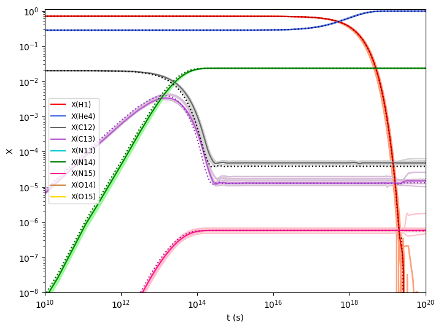

Networks with StarLib rates#
StarLib is a library of thermonuclear reaction rates and weak laboratory interaction rates tabulated as a function of temperature. Its key distinction from other sources is that it provides factor uncertainties for each tabulated rate. Here, we elaborate upon its current implementation within pynucastro and provide examples to illustrate its usage.
import pynucastro as pyna
The intended way to access StarLib rates in pynucastro is through a StarLibLibrary. When an instance of StarLibLibrary is created without an argument, it returns a Library holding instances of StarLibRate at their respective median values, i.e., no sampling is performed.
sl = pyna.StarLibLibrary()
To enable sampling, we must pass a seed. This seed can be passed when a StarLibLibrary is initialized or we can resample an existing StarLibLibrary. Here, we demonstrate the latter by writing out several basic CNO networks. Note that the seeds are chosen arbitrarily to ensure reproducibility.
nuclei = ["p", "he4", "c12", "c13", "n13",
"n14", "n15", "o14", "o15" ]
#Write network with median rates
smrates = sl.linking_nuclei(nuclei)
smnet = pyna.PythonNetwork(libraries=smrates)
smnet.write_network("smnet.py")
# Write networks with sampled rates
seeds = [123, 456, 789, 2468, 46802, 13579, 11235, 235711]
n_sampled = len(seeds)
for i, s in enumerate(seeds):
sl.resample(seed=s)
lib = sl.linking_nuclei(nuclei)
net = pyna.PythonNetwork(libraries=lib)
net.write_network(f"s{i}net.py")
Integrating Networks with sampled rates#
import numpy as np
from scipy.integrate import solve_ivp
We can compare the integration of networks with sampled and median starlib rates against that for ReacLib rates.
rl = pyna.ReacLibLibrary()
rrates = rl.linking_nuclei(nuclei)
rrnet = pyna.PythonNetwork(libraries=rrates)
rrnet.write_network("rrnet.py")
Since the sampled networks are indexed, importing them can be handled in a scalable manner through the importlib package.
import importlib
import rrnet
import smnet
snets = {}
for i in range(n_sampled):
name = f"s{i}net"
module = importlib.import_module(name)
snets[name] = importlib.reload(module)
We initialize thermodynamic conditions and composition similar to previous CNO example.
rho = 150
T = 1.5e7
X0 = np.zeros(rrnet.nnuc)
X0[rrnet.jp] = 0.7
X0[rrnet.jhe4] = 0.28
X0[rrnet.jc12] = 0.02
Y0 = X0/rrnet.A
Then, we integrate.
tmax = 1.e20
rrsol = solve_ivp(rrnet.rhs, [0, tmax], Y0, method="BDF", jac=rrnet.jacobian,
dense_output=True, args=(rho, T), rtol=1.e-6, atol=1.e-6)
smsol = solve_ivp(smnet.rhs, [0, tmax], Y0, method="BDF", jac=smnet.jacobian,
dense_output=True, args=(rho, T), rtol=1.e-6, atol=1.e-6)
ssols = []
for i in range(n_sampled):
sol = solve_ivp(snets[f's{i}net'].rhs, [0, tmax], Y0, method="BDF",
jac=snets[f's{i}net'].jacobian, dense_output=True, args=(rho, T),
rtol=1.e-6, atol=1.e-6)
ssols.append(sol)
Plotting Solutions#
import matplotlib.pyplot as plt
Given that we are comparing network integration across three kinds of rates: sampled StarLib rates, median StarLib rates and ReacLib rates, we can setup color maps to best visualize mass fractions over time.
fig = plt.figure()
ax = fig.add_subplot(111)
col_map_light = {'H1':'lightsalmon', 'He4':'lightsteelblue',
'C12': 'lightgray', 'C13': 'thistle',
'N13': 'paleturquoise', 'N14': 'palegreen',
'N15': 'pink', 'O14': 'peachpuff', 'O15': 'khaki'}
col_map_med = {'H1':'red', 'He4':'royalblue','C12': 'dimgray',
'C13': 'mediumorchid', 'N13': 'darkturquoise', 'N14': 'green',
'N15': 'deeppink', 'O14': 'peru', 'O15': 'gold'}
col_map_dark = {'H1':'maroon', 'He4':'navy','C12': 'black', 'C13': 'darkorchid',
'N13': 'teal', 'N14': 'darkgreen', 'N15': 'mediumvioletred',
'O14': 'saddlebrown', 'O15': 'goldenrod'}
#Plotting sampled StarLib rates
for i, sol in enumerate(ssols):
for j in range(snets[f"s{i}net"].nnuc):
ax.loglog(sol.t, sol.y[j,:]*snets[f"s{i}net"].A[j],
color=col_map_light[snets[f"s{i}net"].names[j]])
#Plotting median StarLib rates
for i in range(smnet.nnuc):
ax.loglog(smsol.t, smsol.y[i,:]*smnet.A[i], col_map_med[smnet.names[i]],
label=f"X({smnet.names[i].capitalize()})")
#Plotting Reaclib rates
for i in range(smnet.nnuc):
ax.loglog(rrsol.t, rrsol.y[i,:]*rrnet.A[i], col_map_dark[rrnet.names[i]],
label=f"_X({rrnet.names[i].capitalize()})", ls=":")
ax.set_xlim(1.e10, 1.e20)
ax.set_ylim(1.e-8, 1.1)
ax.legend(fontsize="small")
ax.set_xlabel("t (s)")
ax.set_ylabel("X")
fig.set_size_inches((8, 6))

Here the dotted lines depict the evolution of mass fractions over time given ReacLib rates, the solid lines depict that for median StarLib rates and the faint lines depict that for each sampled StarLib rates.